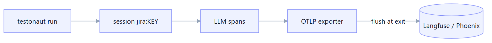
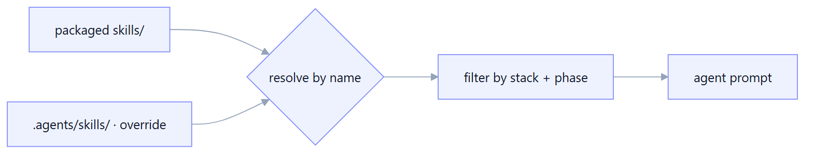

Governance & Platform
The cross-cutting machinery that makes Manso safe to run unattended — budgets, audit, redaction, sandboxing, gates — plus observability, the skills system, MCP, configuration, and evaluation.
Cost budgets
LLM and code-agent runs cost money, and an autonomous loop could run away. Both design-tests and
implement-tests record each run's spend to an append-only cost ledger, then
checkBudget enforces per-run and per-day caps — warning and emitting a budget.breached
audit entry on a breach.
Cost comes from a configurable model price table (modelPrices.ts, overridable via
MANSO_MODEL_PRICES) through a cache-aware estimator: an exact SDK-reported cost
wins, otherwise tokens × price with cached input billed at the cached rate. This closes two blind spots — the
Codex SDK (reports tokens, no dollar cost) and the design phase (the text clients accumulate
token usage). Unknown models log token totals with a hint rather than silently costing 0.
Append-only audit log
Every consequential action is recorded to a JSONL audit log (run.started,
design.created, xray.uploaded, pr.raised,
rule.proposed, budget.breached, run.completed). The
manso audit verb reads it back, filterable by action/target. Entries are redacted before they
are written.
Secret redaction
Before anything reaches logs, telemetry, or the audit file, the Policy Engine scrubs secrets — built-in
patterns (tokens, keys) plus any repo-defined policy.redactPatterns. This keeps credentials out of
Langfuse traces and the audit log even when they appear in tool output.
Sandbox profiles
The code agent runs behind a Sandbox seam that maps a profile to the SDK's permission settings —
read-only, workspace-write, or danger-full-access (selected via
MANSO_SANDBOX). In a container, full access is acceptable because the container is the
isolation boundary; locally you can tighten it.
Human-review gates
Two gates keep a human in control when wanted: humanReviewBeforeUpload (don't push to Xray
without explicit --yes) and humanReviewBeforePr (prepare the branch but don't open the
PR). Setting them to false grants standing approval for unattended pipeline runs.
Observability — OpenTelemetry → Langfuse / Phoenix
Every LLM call is wrapped in an OpenTelemetry span and grouped under one session per ticket
(jira:<KEY>). Spans export to Langfuse or Arize Phoenix,
flushed at process exit so short-lived CLI runs don't lose traces. Lightweight verbs never load the OTel stack
unless telemetry is active. The agentic phases — implement, heal, and respond-to-pr
fixes (Claude/Codex SDK) — are traced too, emitted as generations with token usage and an
exact-or-estimated cost (cost_details) including the cached-input / reasoning-token
split, so the whole pipeline — not just design — shows up in Langfuse with sane cost.
Tech stack
cost_details on the
span (exact SDK cost, else the cache-aware estimate from its own price table) rather than relying on Langfuse's
tokens × model-price inference — which can't see the cached-input split and previously over-stated a
cache-heavy Codex run ~4×.
Skills — SKILL.md with progressive disclosure
Domain know-how lives in SKILL.md files with YAML front-matter (name,
description, appliesTo {stacks, phase}, when). The loader filters skills
by {stack, phase} and resolves them with repo overrides winning over packaged —
a repo's .agents/skills/<name> replaces the built-in. This is how Gherkin conventions,
AC-extraction guidance, and stack binding rules are injected into prompts.
Tech stack

MCP tool ecosystem
The Model Context Protocol lets the code agent use external tools. mcpServers in the
.agents config are typed (stdio/http/sse), have ${ENV_VAR} placeholders expanded from
the environment — secrets stay in env, never in the committed config — and are passed to the
agent SDK. Packaged skills exist for Playwright exploration, selector strategy, Figma spec extraction, visual
regression and accessibility.
Configuration
Two layers: runtime config (env + optional JSON) holds secrets and connection details
(Jira/Xray/VCS/LLM/OTel), while the per-repo .agents/manso.config.json holds
project knobs (product, output mode, stacks, providers, MCP servers, xray.testFields, policy gates,
budgets, PR mention). The .agents/ folder also carries guidance docs and skill overrides.
Eval harness
The eval verb scores generated designs against golden cases — quality scoring against the
coverage SLO — so a release can be gated on benchmark quality before it ships. It's the regression net for the
agent's own output quality.